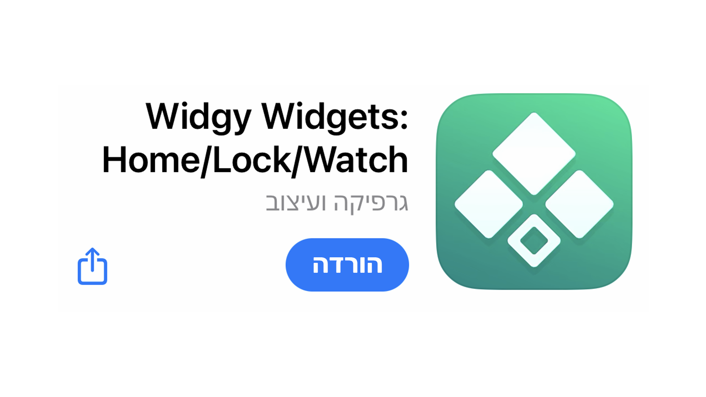
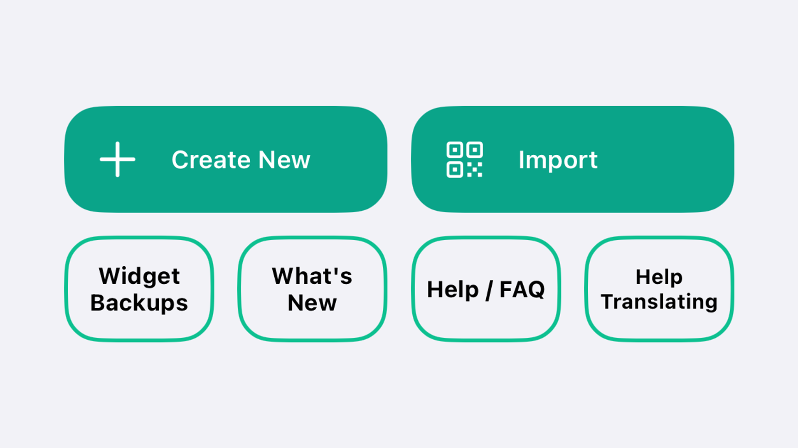
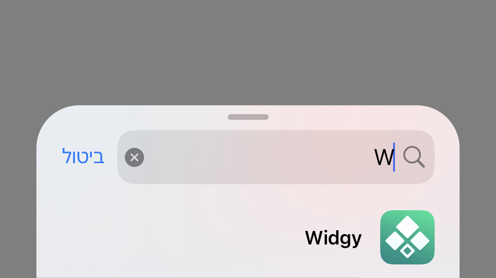

ווידג'ט המציג התרעות ירי טילים במסך הבית של האייפון, מתרענן כל 15 דקות או בלחיצה עקב הגבלות מערכת ההפעלה של אייפון
הורידו את אפליקציית ווידג'י לאייפון
בתוך מסך הבית של האפליקצייה לחצו על כפתור האימפורט
לחצו על האפשרות שנותנת להטמיע קישור והדביקו את אחד מהקישורים הבאים
widgyURL://widgy.icu/api/v1/widgy/9d2428ac-c48e-486d-abec-38299f98d30b
לגרסה בלי אפשרות לפתוח קישור לדף עם כל ההתרעות
widgyURL://widgy.icu/api/v1/widgy/9d2428d4-1204-4bfb-8071-a0f8fe0b289b
לגרסה שפותחת את הדף עם רשימת ההתרעות המלאה
בדף הבית הוסיפו ווידג'ט וחפשו את האפליקציה, משם תוכלו להגדיר את ווידג'ט ההתרעות במסך הבית
